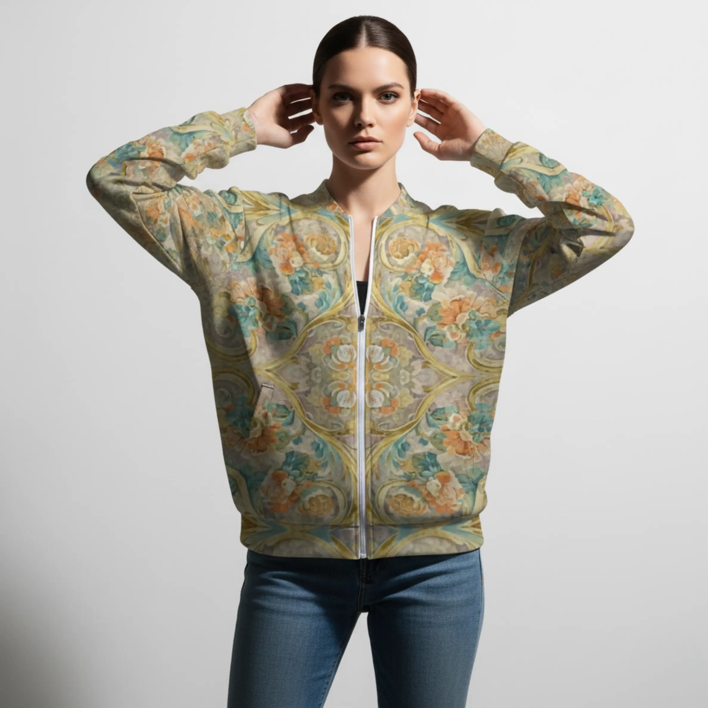
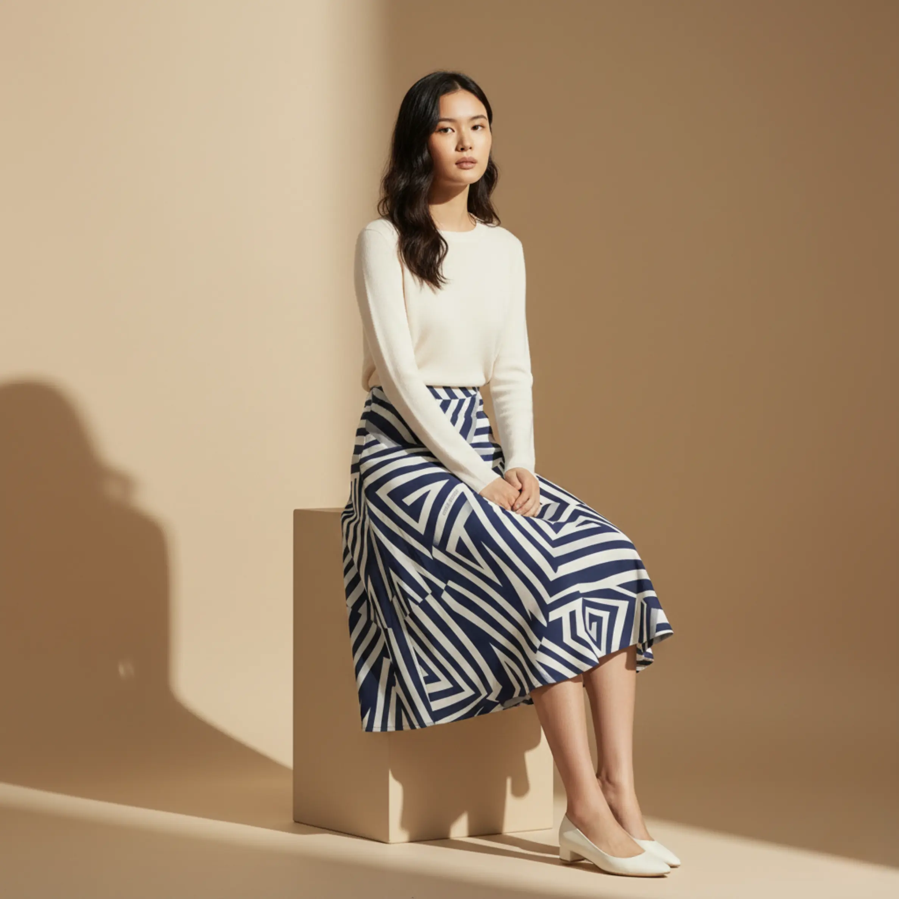
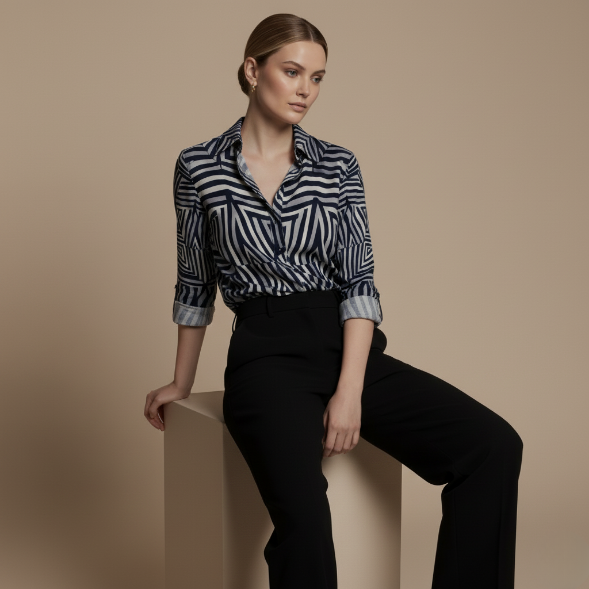

<!DOCTYPE html>
<html lang="en">
<head>
<meta name="facebook-domain-verification" content="fsrfoi1hen3fe3vl3tqdkljqwltmty" />
  <meta charset="utf-8" />
  <meta name="viewport" content="width=device-width, initial-scale=1" />

  <title>ZAYN — The Art of Quiet Luxury</title>
  <meta name="description" content="ZAYN is a house of quiet luxury — geometry meets emotion. Wear silence, not fabric." />
  <link rel="canonical" href="https://www.zaynbrand.com/" />

  <!-- App script (tüm i18n + products yükleme burada) -->
  <script defer src="script.js"></script>

  <!-- Fonts -->
  <link rel="preconnect" href="https://fonts.googleapis.com">
  <link rel="preconnect" href="https://fonts.gstatic.com" crossorigin>
  <link href="https://fonts.googleapis.com/css2?family=Cormorant+Garamond:wght@300;400;500&family=Inter:wght@300;400;500&display=swap" rel="stylesheet">

  <!-- Theme -->
  <link rel="stylesheet" href="styles.css" />

  <!-- iOS küçük iyileştirmeler -->
  <meta name="apple-mobile-web-app-capable" content="yes">
  <meta name="apple-mobile-web-app-status-bar-style" content="black-translucent">

  <!-- Logo & intro ses preload -->
  <link rel="preload" as="image" href="assets/logo.svg" />
  <link rel="preload" as="audio" href="assets/zayn_intro.mp3" />

  <style>
    /* ======== CRITICAL: intro + dissolve ======== */
    <body class="pre-reveal">
  <!-- Intro katmanı (logo) -->
  <div id="zaynIntro" class="show" role="dialog" aria-label="Intro">
    
  </div>

  <div class="ambient" aria-hidden="true"></div>
  <audio id="introSound" src="assets/zayn_intro.mp3" preload="auto" playsinline></audio>

  <!-- TOPBAR (Valentino vibe, ultra sade) -->
  <header class="topbar topbar-valentino">
    <nav class="nav nav-left">
      <a href="#philosophy" class="nav-link">Philosophy</a>
      <a href="#pieces" class="nav-link">Pieces</a>
    </nav>

    <!-- Ortadaki ZAYN, scroll ile küçülecek -->
    <a class="brand brand-center" href="#hero" aria-label="ZAYN Home" id="zaynBrandWordmark">
      ZAYN
    </a>

    <nav class="nav nav-right">
      <a href="#story" class="nav-link">Story</a>
      <button id="langToggle" class="chip" aria-label="Toggle language">TR</button>
    </nav>
  </header>

  <!-- HERO (tam sayfa editorial, ortada dev ZAYN) -->
  <section id="hero" class="hero hero-editorial" aria-label="ZAYN Intro">
    <!-- Arka plan görseli CSS ile verilecek (full-bleed foto) -->
    <div class="hero-bg"></div>

    <div class="hero-overlay">
      <div class="hero-lockup">
        <p class="hero-eyebrow">THE ART OF QUIET LUXURY</p>

        <!-- Bu kelime merkezde, scroll ile shrink alacak -->
        <h1 class="hero-wordmark" id="heroWordmark">
          ZAYN
        </h1>

        <p class="hero-sub" data-i18n="hero-sub">
          Geometry meets emotion — wear silence, not fabric.
        </p>

        <div class="hero-cta-row">
          <a href="#pieces" class="btn primary" data-i18n="enter">
            Enter Collection
          </a>
          <a href="https://www.etsy.com/shop/ByZaynCo" target="_blank" rel="noopener"
             class="btn ghost" data-i18n="etsy">
            View on Etsy
          </a>
        </div>
      </div>
    </div>
  </section>

  <!-- ZAYN Hero Stacked Gallery (ileride editorial tekli foto akışına çevirebiliriz) -->
  <section class="zayn-hero" aria-label="ZAYN Gallery">
    <div class="zayn-deck" id="zaynDeck">
      <figure class="slot"></figure>
      <figure class="slot"></figure>
      <figure class="slot"></figure>
      <figure class="slot"></figure>
      <figure class="slot"></figure>
      <figure class="slot"></figure>
      <figure class="slot"></figure>
      <figure class="slot"></figure>
    </div>

    <button class="zayn-nav prev" aria-label="Previous">‹</button>
    <button class="zayn-nav next" aria-label="Next">›</button>
  </section>

  <!-- PHILOSOPHY -->
  <section id="philosophy" class="section">
    <div class="container">
      <h2 class="eyebrow" data-i18n="philosophy-h">Philosophy</h2>
      <div class="grid-2">
        <p class="lead" data-i18n="philosophy">
          ZAYN is a house of quiet luxury — a gallery of restraint where geometry meets emotion. We design pauses,
          spaces, and textures that let you feel more by seeing less.
        </p>
        <ul id="manifesto" class="bullets"></ul>
      </div>
    </div>
  </section>

  <!-- PIECES (buradaki #grid Etsy/script.js tarafından dolduruluyor) -->
  <section id="pieces" class="section section-alt">
    <div class="container">
      <h2 class="eyebrow" data-i18n="pieces-h">Pieces</h2>
      <div id="grid" class="grid-3" aria-live="polite"></div>
    </div>
  </section>

  <!-- STORY -->
  <section id="story" class="section">
    <div class="container">
      <h2 class="eyebrow" data-i18n="story-h">Story</h2>
      <p class="lead" data-i18n="story">
        Born in Wyoming, carried by silence. ZAYN bridges Eastern sentiment and Western minimalism — crafting pieces
        that speak softly yet powerfully.
      </p>
    </div>
  </section>

  <!-- NEWSLETTER -->
  <section id="newsletter" class="section section-alt">
    <div class="container card">
      <h3 class="h3" data-i18n="nl-h">Join the world of quiet luxury.</h3>
      <p class="muted" data-i18n="nl-p">Be the first to discover new designs, textures, and limited drops.</p>
      <form class="nl" action="#" method="post" onsubmit="return false;">
        <input type="email" class="input" placeholder="Email address" aria-label="Email" />
        <button class="btn" data-i18n="subscribe">Subscribe</button>
      </form>
      <div id="nlThanks" class="nl-thanks" role="status" aria-live="polite"></div>
    </div>
  </section>

  <!-- FOOTER -->
  <footer class="footer">
    <div class="container footer-row">
      <div class="brand small">ZAYN</div>
      <div class="links">
        <a href="#philosophy">Philosophy</a>
        <a href="#pieces">Pieces</a>
        <a href="#story">Story</a>
        <a href="https://www.instagram.com/" target="_blank" rel="noopener">Instagram</a>
        <a href="https://www.etsy.com/shop/ByZaynCo" target="_blank" rel="noopener">Etsy</a>
      </div>
      <div class="muted">
        © <span id="year"></span> ZAYN — The Art of Quiet Luxury ·
        <span class="muted">Made in Silence</span>
      </div>
    </div>
  </footer>

  <!-- INTRO + AUDIO + DISSOLVE logic (sadece intro için) + ZAYN shrink JS -->
  <script>
  document.addEventListener("DOMContentLoaded", function () {
    const intro  = document.getElementById("zaynIntro");
    const audio  = document.getElementById("introSound");
    const KEY    = "zaynIntroPlayed";

    if (sessionStorage.getItem(KEY) === "1") {
      if (intro) intro.remove();
      document.body.classList.remove("pre-reveal");
      document.body.classList.add("reveal");
      if (audio) audio.remove();
      return;
    }

    let v = 0.10;
    if (audio) audio.volume = v;

    function fadeTo(target, step = 0.07, every = 80){
      const id = setInterval(()=>{
        v = Math.min(target, v + step);
        audio.volume = v;
        if (v >= target) clearInterval(id);
      }, every);
    }
    function fadeOut(step = 0.03, every = 80){
      const id = setInterval(()=>{
        v = Math.max(0, v - step);
        audio.volume = v;
        if (v <= 0){ clearInterval(id); audio.pause(); }
      }, every);
    }
    function scheduleFadeOut(){
      const dur = (isFinite(audio?.duration) && audio.duration > 0) ? audio.duration * 1000 : 3000;
      setTimeout(()=>fadeOut(), Math.max(0, dur - 450));
    }
    function startAudio(){
      if (!audio || !audio.paused) return;
      audio.play().then(()=>{
        sessionStorage.setItem(KEY, "1");
        fadeTo(0.55, 0.07);
        if (isFinite(audio.duration) && audio.duration > 0) scheduleFadeOut();
        else audio.addEventListener("loadedmetadata", scheduleFadeOut, { once:true });
        removeUnlockers();
      }).catch(()=>{});
    }

    const events = ["pointerdown","touchstart","wheel","keydown","scroll","mousemove"];
    function unlock(){ startAudio(); }
    function removeUnlockers(){ events.forEach(ev => window.removeEventListener(ev, unlock)); }
    events.forEach(ev => window.addEventListener(ev, unlock, { once:true, passive:true }));
    startAudio();

    const fontsReady = ('fonts' in document) ? document.fonts.ready : Promise.resolve();
    Promise.all([fontsReady]).then(()=>{
      setTimeout(()=>{
        document.body.classList.remove('pre-reveal');
        document.body.classList.add('reveal');
      }, 1600);
      setTimeout(()=>{
        if (intro) {
          intro.classList.add('hide');
          intro.addEventListener('transitionend', ()=> intro.remove(), { once:true });
        }
      }, 2600);
    });

    /* ==== ZAYN hero wordmark shrink logic (scroll’da küçülüp kalıyor) ==== */
    const wordmark = document.getElementById("heroWordmark");
    const brand    = document.getElementById("zaynBrandWordmark");
    const hero     = document.getElementById("hero");

    function updateZaynScale() {
      if (!wordmark || !hero) return;
      const rect = hero.getBoundingClientRect();
      const vh   = window.innerHeight || document.documentElement.clientHeight;

      // 0 = en üstte, 1 = hero tamamen geçilmek üzere
      const progress = Math.min(1, Math.max(0, (vh - rect.top) / (vh + rect.height)));

      // Hero ortasında büyükten (1.0) navbar seviyesinde küçük (0.45) scale
      const scale = 1 - progress * 0.55;

      wordmark.style.setProperty("--zaynScale", scale.toFixed(3));
      // Navbar'daki ZAYN için hafif opacity/scale
      if (brand) {
        const navScale = 0.8 + progress * 0.2; // 0.8 → 1.0
        brand.style.opacity = 0.55 + progress * 0.45; // 0.55 → 1
        brand.style.transform = `scale(${navScale.toFixed(3)})`;
      }
    }

    updateZaynScale();
    window.addEventListener("scroll", updateZaynScale, { passive:true });
  });
  </script>
</body>